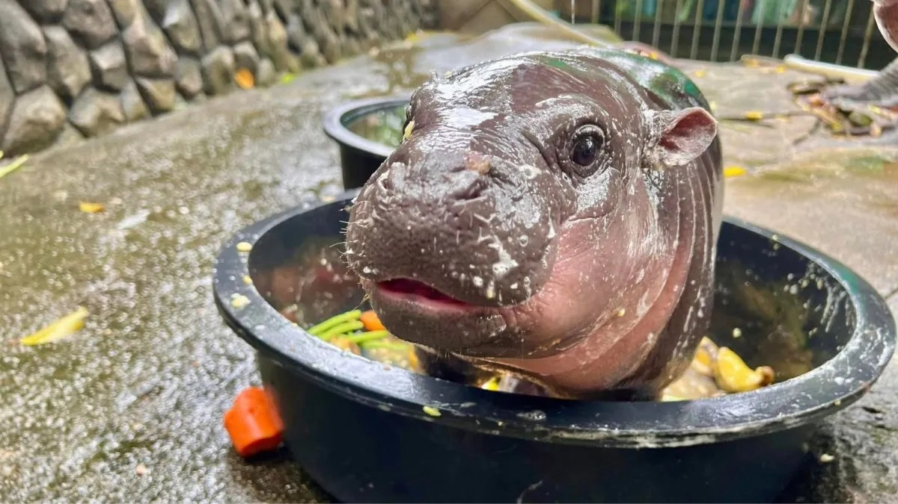

Moo Deng is a pygmy hippopotamus living in Khao Kheow Open Zoo in Si Racha, Chonburi, Thailand. Moo Deng was born on 10 July 2024 to parents Tony and Jonah. She has two full siblings (Nadet and Moo Tun) and four half-siblings (Ko, Kanya, Phalo, and Moo Wan). The name Moo Deng was chosen through a public poll, with over 20,000 people voting for it. It translates to 'bouncy pork' or 'bouncy pig' in English. She became a popular internet meme at two months of age after images of her went viral online in September 2024.
The admission fees for the Khao Kheow Open Zoo as followings:
Additional charges apply for vehicles:
| Time | Activity |
|---|---|
| 08:00-09:00 AM | Wakes up for a bath and waits for Mom to eat breakfast. |
| 09:00-10:00 AM | Walks around, showing off before heading to the water for a nap. |
| 10:00-12:30 PM | Takes a nap in the water. |
| 12:30-01:00 PM | Might get up for a stroll or a nap on land. |
| 01:00-01:30 PM | Naps on land. |
| 01:30-02:00 PM | Naps in the water again. |
| 02:00-02:30 PM | Mom gets out of the water for dinner while Moo Deng naps. |
| 02:30-05:30 PM | Mom eats grass while Moo Deng waits, occasionally running a bit, followed by a long nap until evening. |
| 11:00 PM-12:00 AM | Plays with Mom in the water. |
| 01:00-02:00 AM | Drinks milk and playfully disturbs Mom. |
| 02:00-07:00 AM | Sleeps soundly for hours. |